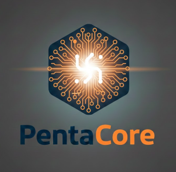

🏢 Identidad

Somos un equipo comprometido con la inclusión y la accesibilidad, enfocados en desarrollar herramientas tecnológicas que faciliten el aprendizaje de la Lengua de Señas Mexicana y mejoren la comunicación entre las personas.
Haz clic para ver más 👇
Equipo desarrollador de la aplicación:
- Joshua Meza Martínez
- Leonardo Chavez Romero
- Rodrigo Romero Gonzalez
- Fernando Ulises Cano Cortes
❗ Problema
El proyecto aborda la urgente necesidad de inclusión y comunicación accesible en el entorno hispanohablante. Actualmente, los recursos en línea para aprender LSM(Lengua de señas mexicana) suelen ser estáticos o desorganizados.
Haz clic para ver más 👇
- Frentes Críticos Identificados: Barrera de Comunicación: Existe una brecha significativa entre la comunidad oyente y la sorda que restringe la participación social y laboral.
- Falta de Plataformas Estructuradas: Los principiantes carecen de una herramienta que combine pedagogía (niveles/quizzes) con utilidad práctica (diccionario).
💡 Solución
Proporcionar una plataforma didáctica centrada en el usuario que convierte el aprendizaje pasivo en práctica activa, promoviendo la accesibilidad a través de la memorización y evaluación constante de señas.
Haz clic para ver más 👇
Incluye diccionario, quizzes y progreso personalizado.
🎯 Objetivos
Desarrollar una plataforma web didáctica, interactiva y accesible que facilite el aprendizaje inicial de la LSM(Lengua de señas mexicana) mediante niveles progresivos y actividades visuales.
Haz clic para ver más 👇
- Aprendizaje progresivo
- Interacción constante
- Inclusión digital
🏛️ DIF
Ofrecer productos o servicios al Sistema Nacional para el Desarrollo Integral de la Familia (DIF) en México implica participar en procesos de compra gubernamental, ya que es una institución pública que opera con recursos fiscales. El DIF busca proveedores para diversas áreas, incluyendo alimentos, materiales de laboratorio, apoyos funcionales, y servicios de atención a personas vulnerabl
Haz clic para ver más 👇
- Misión:Brindar asistencia social y proteger a grupos vulnerables mediante programas de apoyo a menores, personas con discapacidad y adultos mayores.
- Visión:Ser una institución cercana, eficiente y humana, generando impacto positivo en la sociedad.
- Valores:Respeto, empatía, amor, servicio, compromiso, honestidad y profesionalismo.
🚀 ¡Empieza ahora!
Aprende LSM de forma interactiva y a tu ritmo.
Disponible en cualquier dispositivo 📱💻